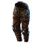
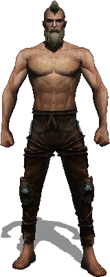

Открыть в интерактивной вики →

| Требуемый уровень | 55 |
|---|---|
| Редкость | Психорар |
| Улучшения | звёзды, орбы, осколки |
| Тип | Штаны |
| Цена | 950 000 |
| Ремонт | 380к |
| Заряды | 3000 |
| Вместимость дрифов | 10 |
| Требуемая сила | 55 |
| Сила | 14 |
| Ловкость | 10 |
| Здоровье | 130 |
| Сопр. рубящим | 36 |
| Сопр. дробящим | 32 |
| Сопр. колющим | 37 |